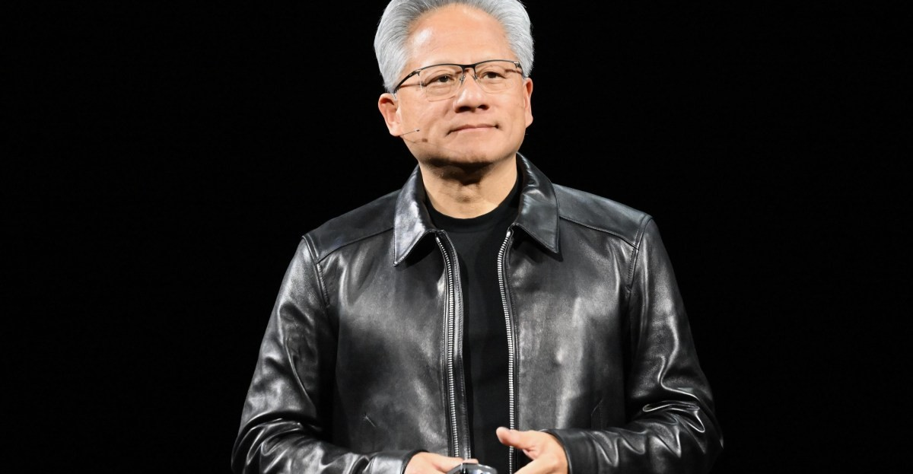
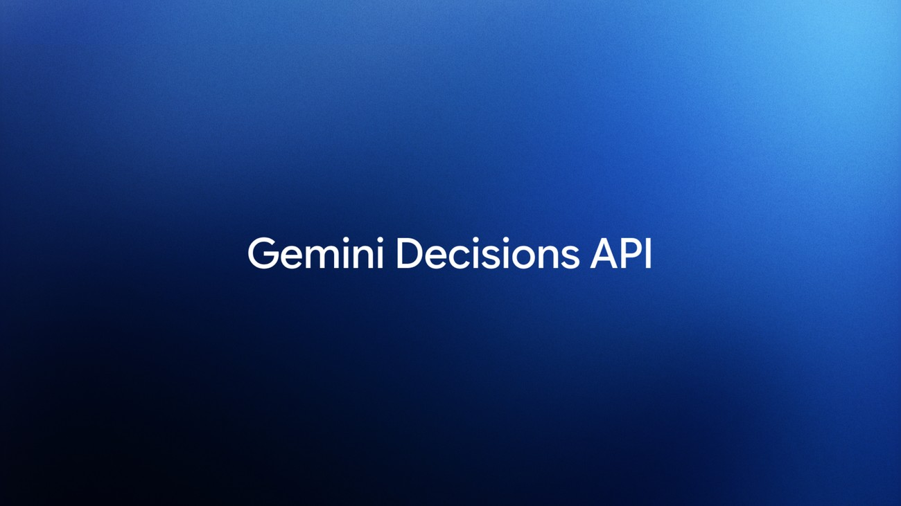
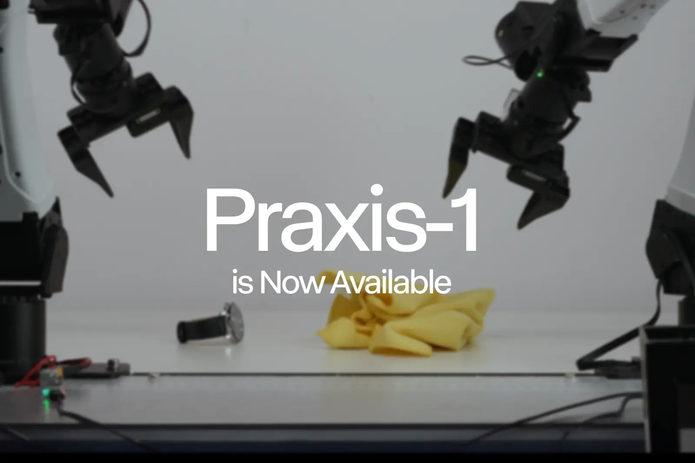

01行业 头条未证实项
NVIDIA 官宣布：黄仁勋即刻辞去总裁、CEO 及董事，CFO Colette Kress 出任临时 CEO
11-12 北京时间本日头条 · 热榜 #1 · 官方 X 13:49:13Z / 北京 21:49，Newsroom 与 TechCrunch、The Verge 均在窗口内独立来源 4 家

黄仁勋（图片来源：The Verge / Getty Images）
介绍
NVIDIA 董事会宣布，黄仁勋已辞去总裁、首席执行官及董事职务，即刻生效。现任执行副总裁兼首席财务官 Colette Kress 同意出任临时 CEO，在董事会选定永久继任者之前将继续兼任 CFO；董事会将同时考虑内部与外部人选。董事会同时任命 Harvey C. Jones 为该公司首位董事长。Kress 自 2013 年 9 月起担任 CFO；Jones 曾任 Synopsys 首席执行官和执行董事长。
为什么重要
这是窗口内最重大的官方人事宣布：芯片与 AI 基础设施龙头在任职超过 33 年后更换创始人 CEO。官方稿件把交接定位为即时生效、业务与产品路线图不中断，并维持原定 11 月 17 日的财报日程。同日稍早的罢免传闻已被这份官方声明取代，但传闻所依据的 WSJ 原文本期仍未打开。
要点
- 官方决定（Newsroom，日期署 November 12, 2026；官方 X 13:49:13Z）：写明董事会宣布 Jensen Huang「has resigned as President, Chief Executive Officer, and a member of the Board, effective immediately」。Colette Kress 出任 Interim CEO，并在寻找到永久继任者之前继续担任 EVP 兼 CFO。Harvey C. Jones 出任「first-ever Chair of the Board」。Kress 在声明中称将与领导团队一起「building on the extraordinary foundation Jensen created over the last 33 years」。财报日程不变：财政 2027 财年第三季度将于 11 月 17 日约下午 1:20 PT 发布，电话会 2 p.m. PT。
- 媒体交叉在窗口内：The Verge 首篇
published_time 13:53:16Z（官方帖后约 4 分钟）；TechCrunch 主文 14:10:34Z，并称监管文件写明董事会于 Wednesday（11 月 11 日）接受辞呈。The Decoder（14:11:40Z）亦报道换帅。SEC 8-K 原文本期请求被拒绝（403），相关「11 月 11 日接受辞呈」的表述转述 TechCrunch，未直接核对原文。 - 同日稍早的罢免传闻（未证实）：@rohanpaul_ai 于 23:43:05Z（北京 07:43）转述 WSJ，称董事会在周日公开力挺之后，「接近决定是否罢免」创始人 CEO。本期未打开 WSJ 原文，该条只作官方宣布前的窗内背景，不把「即将罢免」写成既成事实。
- 明确不用：The Decoder 标题称丑闻已使英伟达市值蒸发约 1.4 万亿美元，此为媒体自行估算，官方稿未给出市值数字，本期不采用。Gemini 4 Hydrogen、民主党对华芯片销售调查、以及 11-13 凌晨之后的辞职分析稿，均在窗口结束之后，留待下期。
⚠ 未打开 WSJ 原文：窗内「董事会接近决定是否罢免」的报道仅见于 Rohan Paul 转述，标未证实。
⚠ SEC 8-K 原文 403 未打开；「董事会于 11 月 11 日接受辞呈」转述 TechCrunch。
02产品
Google 发布 Gemini Decisions API 与 Decision 1：单次最多 1000 题，150–250ms，输入 $0.10/百万 tokens
11-12 北京时间上期推迟 · 官博 datePublished 18:00:00Z / 北京 02:00，官方 X 与评测交叉均在窗口内独立来源 4 家

Gemini Decisions API 官方封面（图片来源：Google 官博）
介绍
Google 推出 Gemini Decisions API，由新模型 Gemini Decision 1（gemini-decision-1）驱动，面向「封闭集合」决策：把共享的多模态输入与一组问题一次送入，返回校准后的概率与置信度，而不是逐 token 生成答案文本。官博写明可在一次前向计算中评估最多 1000 道是/否、多选或量表题，输入覆盖文本、图像、音频、视频和 PDF（最多 256K tokens）。
为什么重要
这把「决策模型」做成了 Gemini API 里的一类专用端点：延迟以毫秒计、输出不计费，适合路由、策略检查和打分，而不是写长文。它与上期已出现的 Jev、OpenAI 决策模型形成直接对照，也是本期窗口开始后第一批完整的官方产品发布。
要点
- 官方规格（官博 datePublished 2026-11-11T18:00:00+00:00）：端到端延迟 150–250ms（模型计算中位 50–100ms，在最多 16K tokens 的上下文、1 到 100 题时几乎持平）。定价为每百万输入 tokens $0.10、输出 tokens $0；共享
input 只计费一次。官博称在其共享基准上，比通过 Interactions API 使用 Gemini 3.5 Flash-Lite「nearly 5x cheaper」。提供三种题型：noul（是/否）、choice（2 至 255 个选项）和 score（有序量表），每道题都带 0 到 1 的置信度。Google AI Studio 提供免费试用档。 - 官方 X：Sundar Pichai 主帖（18:15:20Z / 北京 02:15）重申最多 1000 题、$0.10/百万输入、输出不计费，并称约比 Flash-Lite 便宜 5 倍。@Google 主帖（18:26:30Z）同步介绍该 API 已在 Google AI Studio 上线。
- 第三方交叉：Artificial Analysis（18:18:53Z）称 Gemini Decision 1 在其 Decision Index 上得 66 分。Simon Willison（文末时间 11 月 11 日 10:03 pm，与 AIHOT 所记北京 06:03 一致，约 22:03Z）实测后指出：它与 Jev 题型相同甚至沿用「Noul」一词，定价与 GPT-6 Luna 决策模型同为 10 美分/百万输入；Jev 仍更便宜（4.2 美分/百万）但只支持文本/JSON，Gemini Decision 1 覆盖文本、图像、音频、视频和 PDF。MarkTechPost（21:21:42Z）亦报道同一发布。
- 上期处理：11-11 简报按 AIHOT「11-12 02:00」将其标为窗后。核对该官博时间戳后，发布落在上期窗口结束之后、本期窗口之内，故本期作为主线补上，而非窗后新闻。
03行业未证实项
Anthropic 官方发帖公布 IPO 站点：The Verge 称计划 11 月 19 日开始公开交易
11-12 北京时间官方 X 11:30:46Z / 北京 19:30 · The Verge 13:37:04Z 交叉；上期已写路演与创始人售股，本期只写窗内官宣独立来源 2 家

Anthropic IPO 官方分享图（图片来源：ipo.anthropic.com）
介绍
Anthropic 官方账号于窗口内发帖「Our initial public offering」，并指向 ipo.anthropic.com。帖文附带标准法律声明：公司已向 SEC 提交包含招股说明书的注册声明，注册声明生效前不得出售这些证券。The Verge 同日报道称，Anthropic 确认计划在 11 月 19 日开始公开交易，并预计前一日确定最终发行价。
为什么重要
上期已根据 TechCrunch 写过修订版 S-1 中的创始人售股，以及路演启动时公布的 $70–$78 价格区间。本期新的是公司自己在窗口内把 IPO 站点与官方帖发出去，并出现「计划 11 月 19 日交易」这一媒体交叉。这不等于上市已经完成，也仍不能代替打开 S-1 原文。
要点
- 官方 X（11:30:46Z / 北京 19:30）：@AnthropicAI 主帖给出 ipo.anthropic.com，并写明已向 SEC 提交注册声明（含招股说明书），投资前应阅读其中的招股说明书；注册生效前不得出售。官方站点提供创始人信、路演视频、财务要点、客户案例、参与方式、文件与 FAQ。
- 官方页面上的财务要点（本期打开了 ipo.anthropic.com，仍未打开 S-1 PDF）：站点列出第三季度营收 $17.0B、同比营收「>12x」、过去 12 个月收入不少于 $100K 的客户「>11,900」且该项同比「>12x」、自 2025 年第一季度以来算力效率提升「>4x」、调整后营业利润率 15%、净亏损 $23.3B（其中包含与可转债、衍生负债和 SAFE 公允价值变动相关的 $21.9B 非现金费用）、营业利润率 (3)%。这些数字来自官方页面，并注明须对照招股说明书中的非 GAAP 调节表；S-1 原文本期仍未打开。
- 媒体交叉：The Verge 短讯
published_time 13:37:04Z（北京 21:37）称 Anthropic 确认计划于 11 月 19 日开始公开交易，并预计前一日确定最终发行价；同时回顾本周早些时候公司给出的每股 $70–$78 区间。该文后有多次修改时间落在窗口结束之后，本期只采用首发这段表述。 - 与上期去重：不重写七位创始人各售 3,378,378 股、Class F 投票权等已见上期主线的内容。募资规模、估值传闻，以及修订版 S-1 中与微软、Google 的算力承诺，因 S-1 仍未打开，继续不当作已核实数字写入本期。
⚠ S-1 / 招股说明书原文仍未打开；官方站点财务数字已读到，但完整条款与算力承诺不以转述为准。
04产品
Google 智能眼镜开启预购：与 Warby Parker、Gentle Monster、Samsung 合作，起步 $395，12 月 10 日发售
11-12 北京时间官博 datePublished 14:00:00Z / 北京 22:00 · 9to5Google 同时、Ars Technica 14:50:17Z 交叉独立来源 3 家
Warby Parker 与 Gentle Monster 智能眼镜系列（图片来源：Google 官博）
介绍
Google 官博宣布 Intelligent Eyewear 系列开启预购。这批眼镜由 Google 与 Warby Parker、Gentle Monster 和 Samsung 合作设计，内置 Gemini 能力，用于出行时的免手操作助手。官博写明 Warby Parker 光学与太阳镜款起步 395 美元，Gentle Monster 系列起步 449 美元，并指向 12 月 10 日发售。
为什么重要
这是消费级 Gemini 硬件第一次进入可预购、可定价的窗口，而不只是概念演示。价格、合作品牌和发售日都可以在官博核对；官方后续在窗口结束后的跟帖不纳入本期依据。
要点
- 官方发布时间与价格（官博 datePublished 2026-11-12T14:00:00+00:00）：Shahram Izadi（VP & GM, XR）宣布预购开始。设计合作方为 Warby Parker、Gentle Monster 和 Samsung。Warby Parker 提供 Alden、Reid、Wren 三款，光学或太阳镜风格，起步 $395，有 Pine、Saddle、Jet Black 配色及多种处方、镜片选项。Gentle Monster 系列起步 $449，将在美国和韩国销售。官博写明可在 Google Store 等渠道下单或预约试戴，December 10 发售。
- 媒体交叉：9to5Google 的
published_time 同为 14:00:00Z。Ars Technica（14:50:17Z）核对 Warby Parker 起步 $395 起、12 月 10 日出货上架，并补充启动时的手机兼容范围：iPhone 13 Pro 起；Android 需 Pixel 7 或更新，或运行 One UI 9 及更新版本的 Samsung Galaxy S / Z 系列。Ars 还转述 Google 的隐私设计（录制指示灯、物理开关、影像不进入 Gemini 历史且不用于训练或广告）。 - 窗口边界：@joshwoodward 关于「今天起预购、12 月 10 日发货」的帖子时间为 21:23:12Z（北京 11-13 05:23），已过窗口，只作交叉、不作为本期时间依据。Samsung 新闻稿时间戳「2026-11-12 11:00:15」未标明时区，若为美东时间则可能落在窗口结束之后，本期不用该稿件的额外数字。
05行业
美联航限制未经授权的第三方 AI 智能体访问订票系统，政策同时覆盖旅行社与聚合平台
11-12 北京时间上期推迟 · 官方新闻稿署 November 11，窗内最早打开的媒体为 Skift 19:49:44Z、The Verge 21:54:21Z独立来源 3 家
美联航客机（图片来源：The Verge）
介绍
美国联合航空发布新闻稿，称将采取措施限制未经授权的第三方个人 AI 智能体或助手访问其服务：既包括公司自有数字平台上的直接访问，也包括经由旅行社和聚合平台的间接访问，并更新预订、出票和分销政策。官方理由包括账号凭证共享可能导致敏感信息暴露、非预期购买或动用 MileagePlus 里程，以及自动操作可能与 FAA、DOT 规定冲突（稿件举例：办理值机需由人确认行李不含违禁品）。
为什么重要
这是大型航司把「个人智能体代客下单」写成明确禁令，并把限制延伸到分销渠道，而不只是自己的 App。它标志着面向消费者的 Agent 开始碰到现有账户、安全和监管框架；美联航同时表示，会随着个人助手的演进继续评估如何与这些工具互动。
要点
- 官方口径（Newsroom，日期署 November 11, 2026）：保护客户数据与账户是优先事项；与第三方个人 AI 助手共享账户凭证可能暴露敏感信息，或导致非预期购买、账户变更、动用 MileagePlus 里程。限制范围包括自有数字平台，以及旅行社和聚合平台上的间接访问，并更新 booking、ticketing 和 distribution 政策。美联航称银行业与零售业已有类似做法，并将更新 Digital Trust Center 说明新限制的含义。
- 窗内媒体：Skift（19:49:44Z / 北京 03:49）与 The Verge（21:54:21Z / 北京 05:54）均在本期窗口内报道此事。Verge 标题写明「United won’t let your AI agent book your flight」。上期因最早交叉落在本期窗口而推迟，现予补录。
- 时间与限制：官方新闻稿只有日期、没有精确时刻；若实际发布时间早于 16:00Z 11-11，则属于上期窗口内未被收入的条目，本期按「上期推迟 / 补录」处理，不把官方日期改写成 11-12。TechCrunch 同题报道
published_time 为 17:17:58Z，已过窗口，只用交叉、不作为时间依据。本期未打开 WSJ 原文，不引用其中未核对的管理层原话。
06模型
上期推迟补录：Runway 以 Apache 2.0 开放 Praxis-1，RoboLab-120 成功率 46.2%，官方发布时间实为上期窗口内
11-11 北京时间上期推迟补录 · 官方主帖 15:04:18Z / 北京 11-11 23:04（早于本期窗口 56 分钟）；The Robot Report 13:18:47Z 在本期窗口内交叉独立来源 2 家

Praxis-1 官方封面（图片来源：Runway）
介绍
Runway 宣布世界动作模型 Praxis-1 向所有人开放，权重与推理、微调代码采用 Apache 2.0 许可（含商业使用）。官博写明这是 27B 参数的混合专家扩散 Transformer，同时预测视频与动作，并在 NVIDIA RoboLab-120 榜单上以 46.2% 的成功率（共 1200 个回合）成为表现最好的世界动作模型，同时超过榜上每一个开源权重的 VLA。
为什么重要
上期依据 AIHOT「11-12 07:25」将其留待本期，但官方时间戳显示发布其实落在 11-11 窗口内。本期补录，是为了把已核对的基准数字和开源许可写进简报，并标明时间误判，而不是把它当成 11-12 当天的新发布。
要点
- 官方时间必须写清楚：官博
datePublished 为 2026-11-11T15:00:00.000Z，官方主帖 @runwayml 为 15:04:18Z（北京 11-11 23:04），早于本期窗口开始（16:00Z）约 56 分钟，实际属于 11-11 窗口。11-11 简报按 AIHOT 索引时间误判为窗后。The Robot Report 于本期窗口内 13:18:47Z（北京 21:18）报道「yesterday released」，作为交叉，不改变官方发布时间。 - 已核对的基准（官博原文）：「On RoboLab-120, Praxis-1 reaches 46.2% success across 1,200 episodes, compared with 42.9% for FLUX 3 Action, 36.8% for Cosmos3 Nano and 28.0% for π0.5。」官博称其是「top-performing world action model」，并「outperforms every open-weight VLA」。数字以官博这张表为准；不把未在该表出现的其他类别条目写进对比。
- 开放范围：权重与推理、微调代码以 Apache 2.0 发布，含商业使用；支持全量微调与 LoRA。可在 GitHub、Hugging Face（原生支持 LeRobot）和 vLLM-Omni 获取，并提供 Reactor 托管推理。官博称可在 NVIDIA 数据中心 GPU（如 H100、B200）、工作站 GPU（如 RTX 5090、RTX PRO 6000）以及机器人端的 Jetson Thor 上运行。
Figma 官博：3D transforms 进入开放测试，Figma agent 同时正式可用11-12Figma 博文 published_time 14:00:00.000Z（北京 22:00）称，3D transforms 即日起 open beta，可为文本、图像、矢量与画板增加倾斜、旋转与空间编排，并在父级画板加入透视效果；文中同时宣布 Figma agent generally available。本期只打开官方博文，未见窗内官方 X 或其他独立媒体交叉，故不升主线。
OpenRouter 两篇官博（均署 00:00:00Z）：用四层防护阻止 Agent 死循环；本地化流水线全站重译约 $46011-12两篇 published_time 均为 2026-11-12T00:00:00.000Z（北京 08:00），上期将无限循环教程列为窗后，本期补上。教程称打开 doom-loop 检测后，测试的六个模型都会在第三次相同工具调用时被拦住；未开启时 18 次运行中有 4 次一直重试到 40 步上限，开启后 18 次中有 16 次在两次真实工具调用后结束。另外三层是 loopKey 归一化、stopWhen 的步数与成本上限，以及 API key 额度（超限返回 402）。本地化文称站点现有 16,918 条英文串，用 GPT-6.1 Sol 把今日目录重译成 7 种语言约 $460（含翻译与校验），约为 Smartling 机器翻译牌价的 6%（文中对照约 $7,200）；最坏情况每条每语言约 20 次模型调用。未见窗内官方 X 或其他独立媒体，故入速览。
OpenAI Alignment 博文：用自动化红队提升 GPT-6 Astra 与 Sol 在高风险领域的模糊鲁棒性11-12官博日期署 Nov 12, 2026（datetime 只有日期；AIHOT 记北京 16:00，约 08:00Z）。文章介绍以扩大攻击者测试时算力搜索越狱，并要求攻击在重复测试中成功（worst@n），再把这些样本用于训练。文中给出未叠加生产防护时的结果：在网络相关的固定越狱集上，GPT-6 Astra 安全作答 91.5%，对比 GPT-5.6 Sol 的 59%。本期未读到官方 X 或其他独立媒体交叉，不升主线。
Arena：ERNIE 5.5 Flash Preview 以 1668 分趋向 Code Arena: WebDev 开源模型第二11-12@arena 于 01:08:21Z（北京 09:08）称该模型正以 1668 分趋向成为 Code Arena: WebDev 上第二名开源模型，并称权重将以 Apache 2.0 开源。@Baidu_Inc 于 01:09:09Z 转发。这是上期主线（Flash Preview 发布）的窗内榜单跟进，不重写 280B / 14B / 1M 上下文等已报道规格。
Grok Bot 1.0 官方账号发帖介绍「团队协作的 AI 队友」（单方官宣 + 社区教程，不升主线）11-12@bot 于 18:22:30Z（北京 02:22）发帖「Introducing Grok Bot 1.0」，互动很高（约 14,559 赞、4,228 次收藏），但本期只读到这一条官方自述，未见第二家独立媒体核实产品细节。WaytoAGI 11-12 有一篇《如何在5分钟之内创建Grok Bot的超级团队》的社区教程，只作社区跟进。不把该帖当作本日头条，也不扩写未经核对的产品能力。
上期推迟：Claude 官方 YouTube 讲解如何在 Claude Code 里选择 Fable 5.2 与 Opus 等模型11-12AIHOT 快讯记北京 11-12 01:30（约 17:30Z 11-11），源为 Claude 官方 YouTube 视频。属上期窗后、本期窗内的产品讲解，不构成新模型发布，故入速览。
AIHOT 日报 11-12/11-13 + latest/hot/search读到
11-12 日报多数已在上期覆盖或属窗后索引；主线取自窗口内官方时间戳，并纳入上期明确推迟的 Decisions API、美联航、Praxis-1、OpenRouter 教程、Claude Code 视频、ERNIE Arena 1668。窗后的 Gemini 4 Hydrogen、Claude Meetings / Opus 5.5 默认、Replit Agent、民主党调查、Atlas、Epoch AI、Inkling 2 Small，一律留待下期。
X 公开数据（官方账号/搜索）读到
search_posts_all / get_users_posts / get_posts_by_ids 可用；读到 @nvidianewsroom 换帅、@sundarpichai / @Google Decisions、@AnthropicAI IPO、@arena / @Baidu_Inc、@bot、@runwayml（窗前）、以及窗后的 @joshwoodward / @theworldlabs / @thinkymachines 以作排除。
你在窗口内发的推文（@HhhharryRen）读到 · 没更新
get_users_posts 接口正常返回，窗口内 0 条
你的 X 收藏读到 · 没更新
可读本页 30 条；窗口内 0 条新收藏，最新仍为 2026-11-02 10:55Z @0xluffy_eth
WaytoAGI 飞书知识库读到
公开 wiki 已落盘 sources/waytoagi.md；11-12 共 7 条已合并。Grok Bot 教程与官方自述一并作速览，其余为社区教程，不升主线。
官方页面核对读到
NVIDIA Newsroom、Google Decisions / Intelligent Eyewear 官博、ipo.anthropic.com、United Newsroom、Runway Praxis-1、Figma 3D、OpenRouter 两篇、OpenAI Alignment fuzzy-robustness、Claude Meetings / Opus 5.5 日报页（仅有日期，官方 X 在窗后）。SEC 8-K 与 S-1 原文未打开。
媒体交叉读到
The Verge（NVIDIA 换帅、United、Anthropic 11 月 19 日交易）、TechCrunch（NVIDIA 换帅；民主党调查在窗后只作排除）、The Decoder、MarkTechPost、Simon Willison、Skift、Ars Technica、9to5Google、The Robot Report。
彭博社 / 华尔街日报 / The Information / SEC S-1 / SEC 8-K没读到
WSJ 罢免传闻仅见 Rohan Paul 转述；SEC 8-K 403；S-1 仍未打开。相关表述已改用已读到的转述或官方页面，并在对应条目标未证实或限制引用范围。